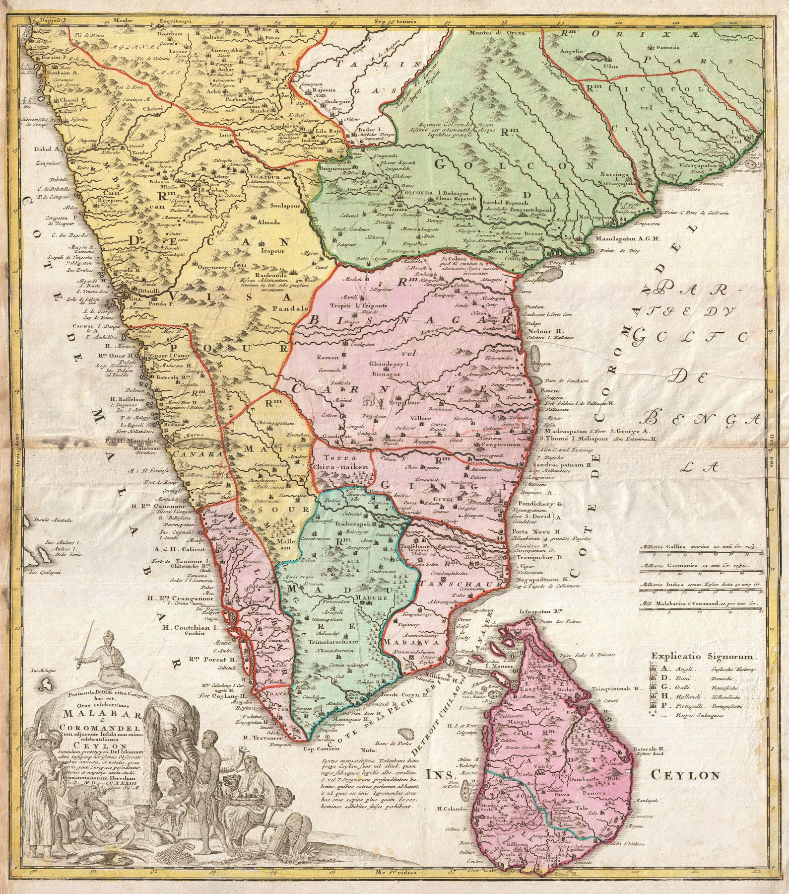

← Baroque Mughals and Companies

A coloured atlas map of the southern peninsula and Ceylon, organised around the celebrated Malabar and Coromandel coasts. Geographic compilation, commercial interest and elaborate ornament are combined into a saleable image of maritime South India for the European atlas market.
The object
The sheet is dated 1733 and belongs to the Nuremberg publishing tradition associated with Johann Baptist Homann and continued by his heirs after his death. Its Latin title – Peninsula Indiae citra Gangem … Malabar & Coromandel … Ceylon – announces the peninsula through the two coasts best known to European trade, with Ceylon set alongside it. The Rumsey copy is a coloured engraving measuring approximately 55 by 48 centimetres, at about 1:3,000,000.
Two commercial coasts
The map’s conceptual axis is maritime. “Malabar” and “Coromandel” are the trading fronts by which European companies encountered the peninsula: pepper and ports on the west, textiles and settlements on the east. Inland kingdoms, rivers and towns fill the space between them, but the shape of knowledge remains strongest where ships, merchants and printed sources had travelled.
Ornament as atlas argument
Colour separates territories and an elaborate title cartouche converts the map into a visual commodity. The ornament tells the purchaser how to see the sheet: distant places made abundant, picturesque and available for learned inspection. The figures and emblems belong to European conventions of representing Asia rather than to neutral ethnographic description.
The gaze
Homann’s heirs sold the peninsula as a picture. The cartouche, the colour and the two famous coast-names promise the reader abundance, and the interior is filled rather than left honest. Set beside d’Anville’s austere sheet of nineteen years later, this is what the atlas market wanted before criticism became a selling point.
In the Deccan timeline
The siege of Jinji (1690–1698) · The Carnatic wars (1746–1763)